Throughout the project, we practiced the methods outlined in lecture and discussion,
including rasterizing triangles, antialiasing through supersampling, implementing transform operations,
bilinear interpolations, and texture mapping with mipmaps. Learning how to interpolate was a really interesting
part of this project because it made creating smooth gradients really easy. I always wondered how gradients were
created to be so perfectly smooth, and it's really interesting to see that there is a mathematical explanation for the
transitions.
Overall what we have created allows one to look at how an image changes when rasterized through many different methods.
Comparing the methods side by side can help one decide which method is best for a certain image, and which method will
create the clearest image.
We are provided 3 coordinate points that represent the vertices of a triangle. To rasterize the triangle,
we use a point in line test for each set of vertices (using 3 point in line tests in total) to check whether a given pixel
(x,y) is within the boundaries of the triangle. In order to have functionality for vertices set up in either
winding direction (both clockwise and counterclockwise), we needed to take into account cases in which our point in line tests
yield negative numbers. To ensure that the rasterization is not too computationally difficult, we calculated an
upper and lower bound based on the bounding box of our triangle so that we aren't going through our entire sample buffer, but instead
just the set of points that could potentially be within our triangle. One issue that we ran into was making sure that
we rasterized points that were on the line and not just inside, so we edited our inequality to be inclusive.
We also had to make sure to look at points relative to the center of the pixels as opposed to the corners,
which we did by adding .5 to the x and y coordinates of each pixel.
Below is an example of our triangle rasterization. Notice the jagged edges on the zoomed in portion of the image.
These jaggies are due to points being measured just outside the boundaries of the triange.
|
|
The idea with supersampling was to antialias jaggy edges by averaging the color values within a single pixel.
We accomplish this by setting a sample_rate which defines how many subsamples each pixel contains,
iterate over each of these coordinates to take the samples, and then average the color values
to determine the color value for the pixel. To implement supersampling, we had to modify our rasterization pipeline.
We scaled our coordinate points by the sqrt(sample_rate) allowing us to pretend our image had more pixels than it did.
We were then able to sample each pixel and decide if it should be filled or not (using the logic from task 1).
Once all the pixels were filled, we translated the colors we sampled into a frame buffer (in resolve_to_framebuffer),
from where we were able to scale back down the size of our buffer into the original width*height by averaging
the groups of sample_rate subsamples.
The 4 images below show a close up view of the edge of one of the traingles as the sample rate changes. The first
image is the same as we saw in task 1. Jaggies can be seen on the thin part of the triangle. With 4 subpixels,
less jaggies are seen, and you can see that the edges of the triangle are a bit blurred, with some lighter colors
near the border. This triangle looks more complete and less jagged. This improvement continues to be seen as the sample
rate increases. Although it's not immediately apparent, a closer look shows that even in the zoomed out images, one can see
the change from no subsampling to 4x4 subsampling. The edges of the triangles seem smoother and more clear.
|
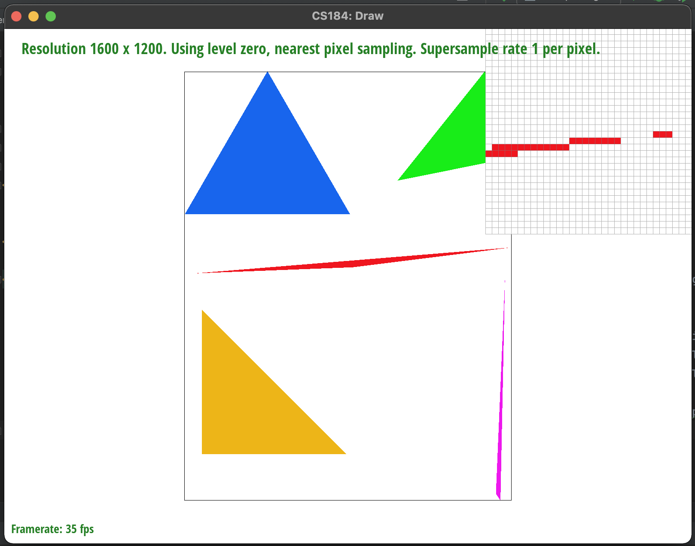
|
|
|
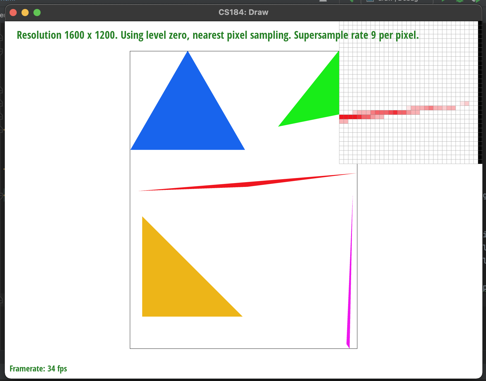
|
|
We decided to make cube man a breakdancer. His name is now Breakdance Man, and he can hold a sideways handstand for hours on end. We accomplished this by rotating cubeman 90 degrees, and then translating him to get him back in the center of the screen. A screenshot of Breakdance Man is shown below.
|
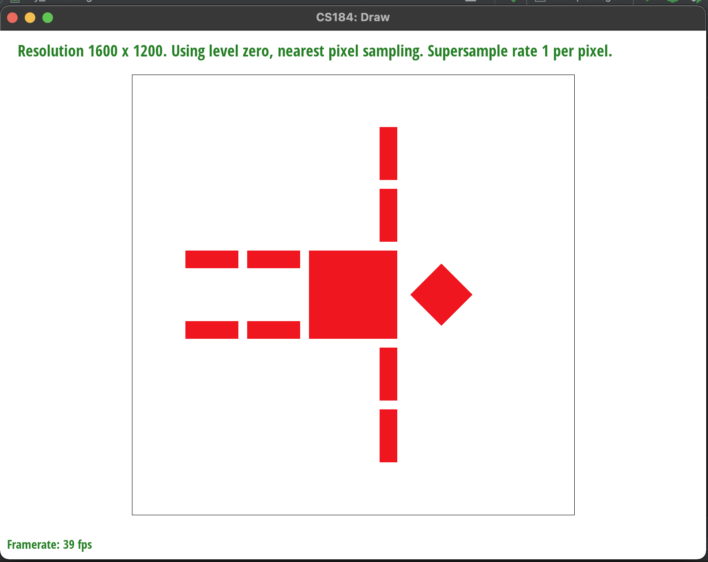
|
The idea with barycentric coordinates is to take any three coordinate points in 2D space alongside a (u,v) inside
those three coordinate points to create a weighted sum of the values corresponding to the three points in space.
For example, we can interpolate the colors at each of the three points of the triangle with
respect to the (u,v) inside the triangle. We can calculate weights for each of the points (xi, yi) depending on the
distances from (u,v) to that point. Using these weights, we can create a new color for our point (u,v) that is a weighted
sum of the surrounding coordinate points. This allows for smooth blending of colors along a triangle. It is important to
note that this kind of linear interpolation can be done on many parameters (not just color), including texture
(which we see in future tasks).
An illustration of interpolation using barycentric coordinates can be seen below. We can see a triangle filled with a
gradient which is a result of interpolating the color. We've also included the result of test7.svg for reference.
|
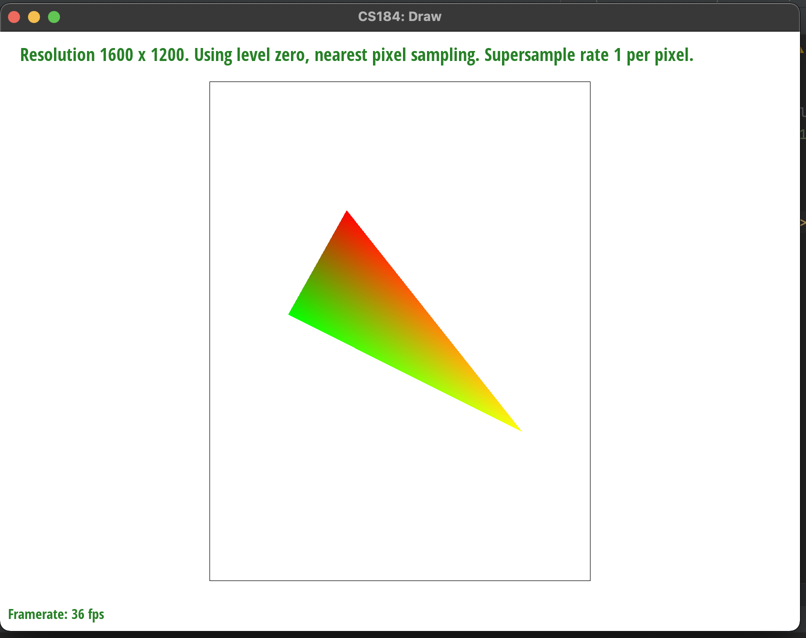
|
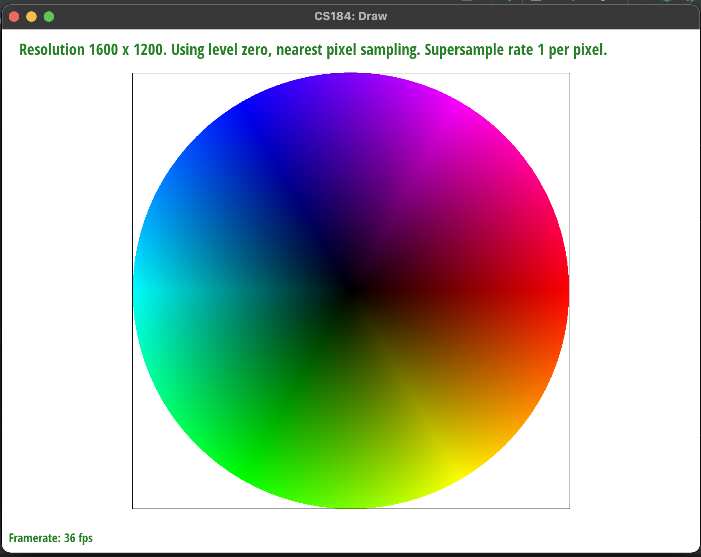
|
Pixel sampling is used when we want to add a texture onto our screen. If we have a pixel in screen space (x,y) that
we want to color based on a texture image, we grab a corresponding pixel (u, v) from our texture space and
map it onto the point on our screenspace. Doing this for all points on the screenspace overlays the texture image onto our screen.
The two sampling methods we've discussed and implemented are nearest and bilinear.
For nearest we just take whichever color on our texture space is nearest to our (u,v) coordinate and
translate that to our screen space. The issue with this is that if the texture space and screen space have differet
dimensions, our texture can look choppy and aliased. Bilinear sampling can produce a smoother result.
For bilinear sampling we take the four nearest points on the texture space and perform linear interpolation between
those points to find the weights to determine the average color. This method can help antialias the resulting texured image.
If there is high-frequency change in the texture image such that many pixels have drastically different color values
than their neighbors, and when the texture image has a different size than the screen space,
we expect interpolation to perform better than nearest for mapping from the texture space.
Below you can see examples of pixel sampling with nearest sample and bilinear sample for sample rates of 1 and 16.
Notice that the nearest sample is much more choppy, and has more jaggies. Bilinear sample is smoother and shows the
texture more clearly. The difference can even still be seen when supersampling is implemented, as the bilinear sampled
supersample image is more clear and smooth than the nearest sample supersampled image.
|
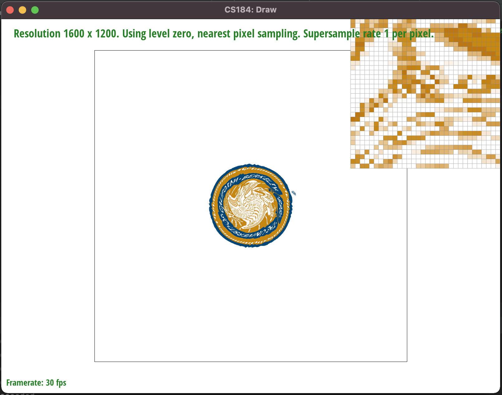
|
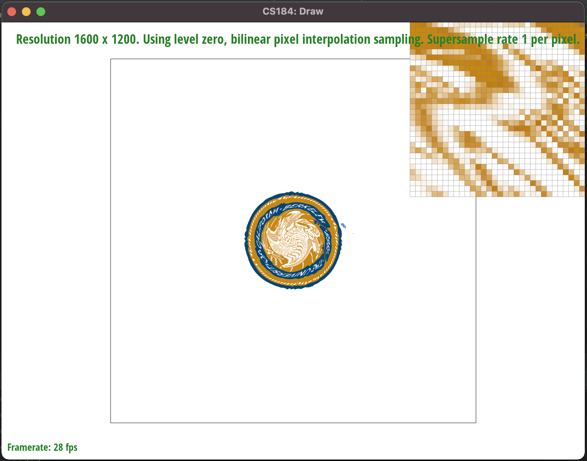
|
|
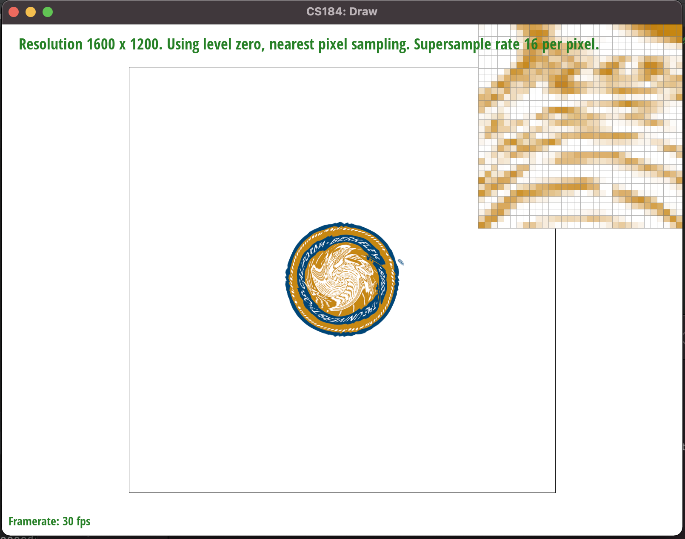
|
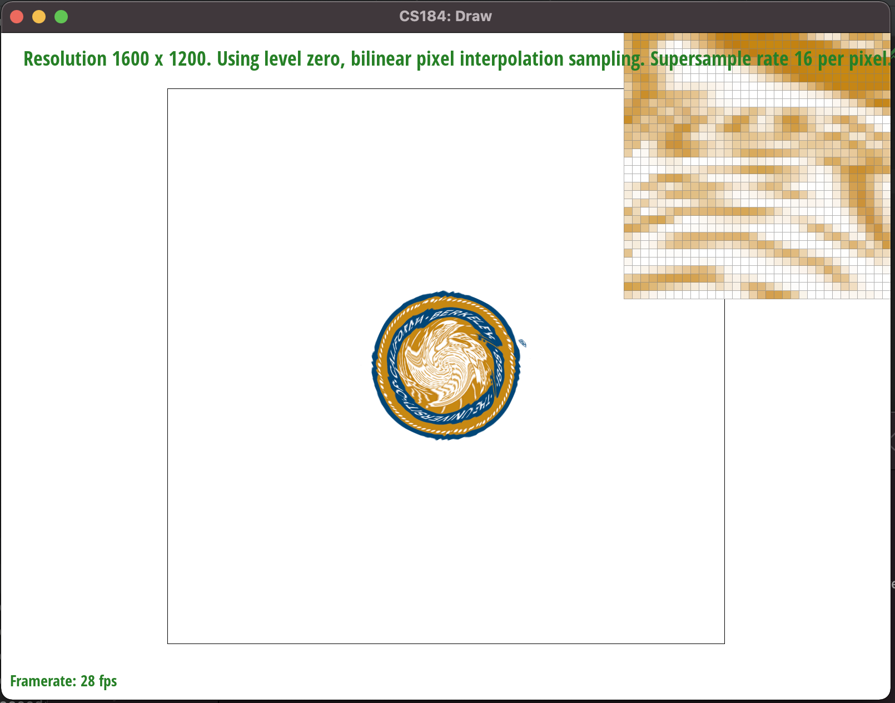
|
Level sampling is used to combat the impact of having a texture image and a coordinate space that have different sizes.
When the sample rate of the images differs, it can be useful to use a lower resolution version of the texture image to pick
the correct color. This can help reduce inconsistencies in the result such as jaggies. To implement this level sampling,
we use what is called a mip map. The mip map stores many copies of the texture image, all at different
resolutions. The benefit of mipmaps, is because the changes are in log2 space, we only use 1/3 more space than we
would have if we had just had 1 texture image. This way, we can choose which level we want to sample from for a particular
point, by comparing how much a point (u,v) changes per one change in its corresponding points (x,y).
Once we have this derivative, we can calculate the proper level from which we can sample to fill in our screen. The mip map
method ends up being both effective, and not too hard on the memory.
For level sampling, we had 3 different options. We can use level 0, which essentially replicates the functionality of task 5.
We can use nearest level, which find the nearest integer level to our calculated value, and uses that. Finally, we can use
linear interpolation to find the optimal color value for a point that lies between two levels. This last method reduces
abrupt transitions between levels, and makes the whole image look smoother.
ADD SECTION ABOUT "Describe the tradeoffs between speed, memory usage, and antialiasing power between the three various techniques."
Overall, it is clear that there are differences between the speed, memory usage, and antialiasing power of these three
techniques. Zero-th Layer is clearly the choppiest. Although it is computationally the simplest, it doesn't utilize the
power of mipmaps and in the image below, the lightning is very jagged, and the clouds appear textured rather than smooth.
Nearest Layer shows significant improvement when compared to Zero-th Layer. The lines are smoother and the clouds in the
image are far less choppy and granulated. Utilizing the power of mipmaps clearly helps make the image better. Computationally,
this technique doesn't add that much extra computation to the code than the Zero-th Layer, so it is better to use this over
the naive implementation. For Bilinear Layer, it is a little difficult to see a difference between this and the Nearest Layer.
It does look a bit more clear, and in an image that has a lot of high frequency change, it would ensure that the borders between
layers are more smooth and like a gradient. Overall though, Bilinear does add extra computation because it requres more sampling of
the texture space and more interpolation. It would be good to use this method when the need for smooth transitions
overrides the desire to save on computational power.
|
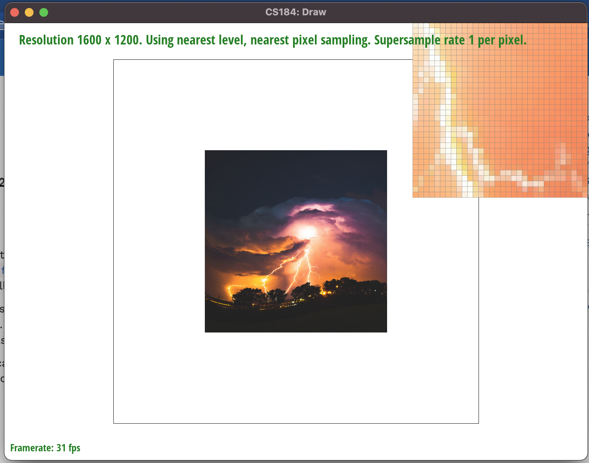
|
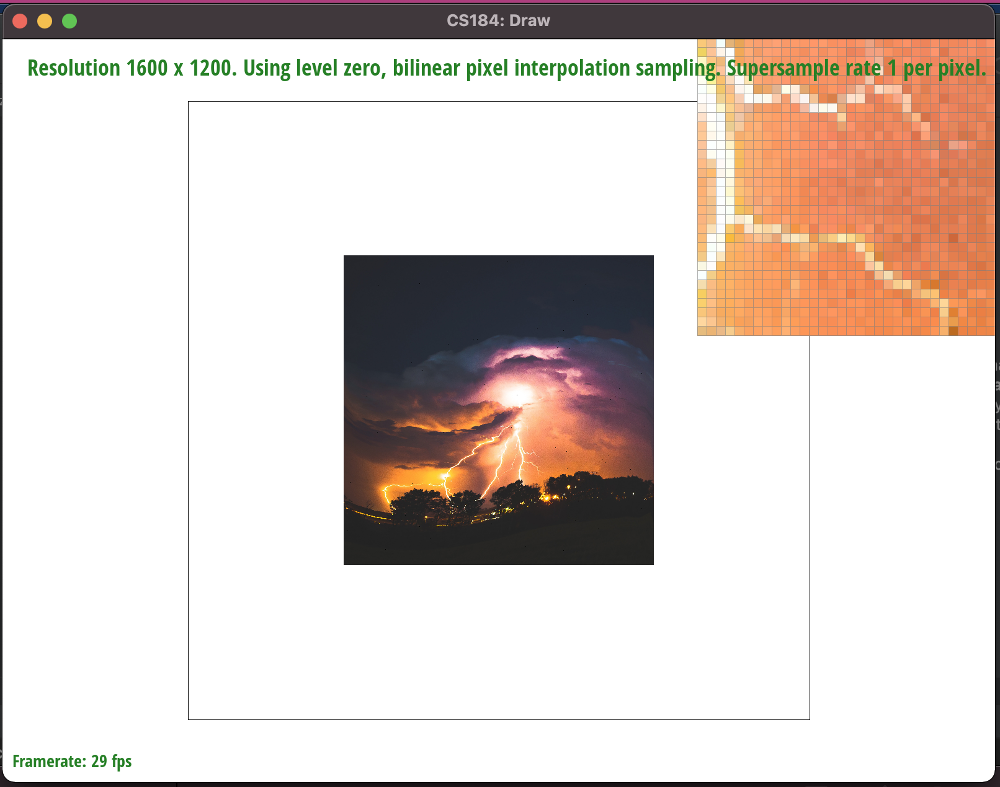
|
|
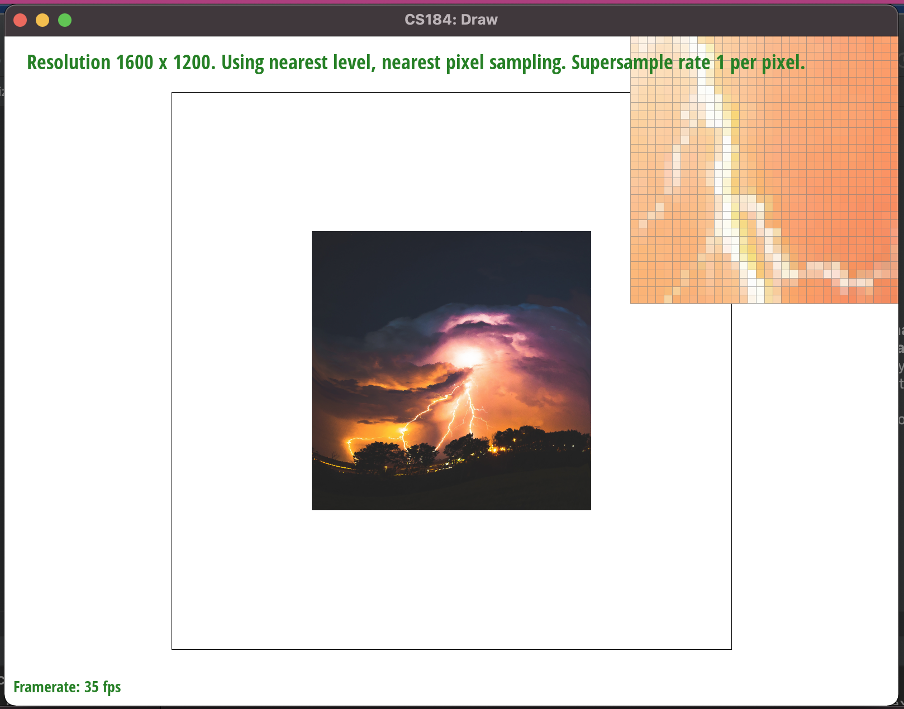
|
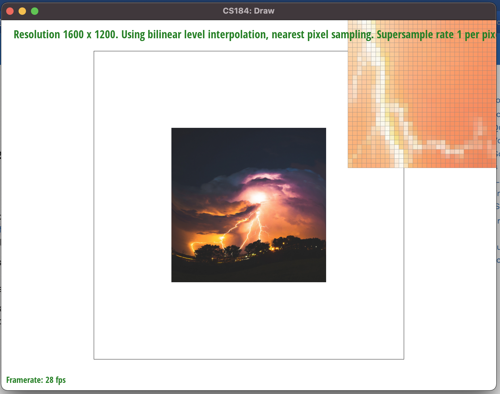
|
|
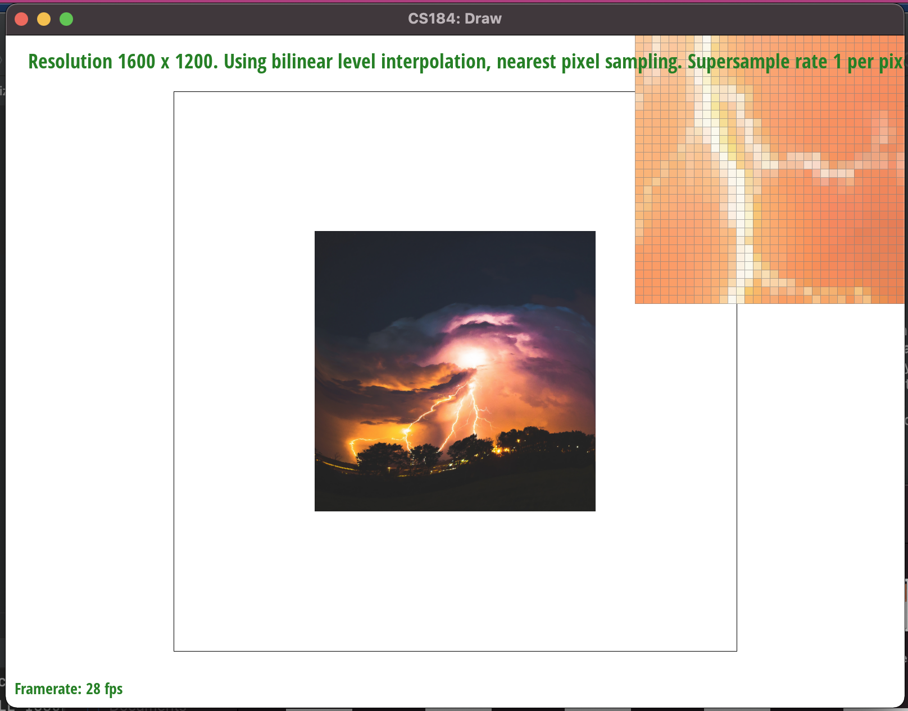
|
|
If you are not participating in the optional art competition, don't worry about this section!